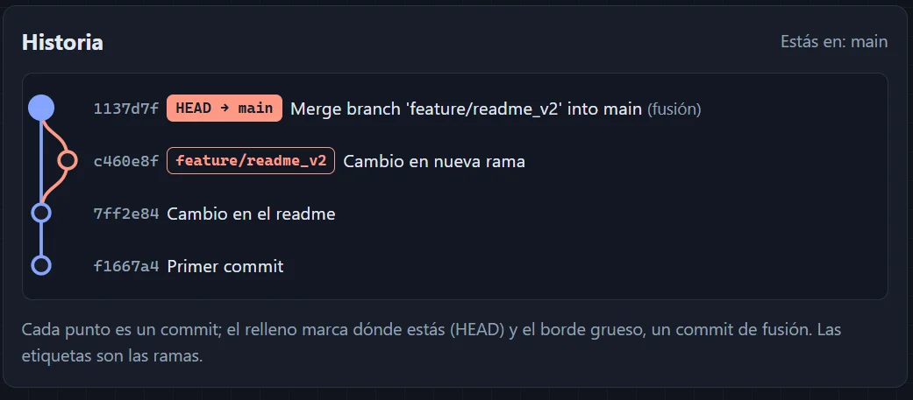
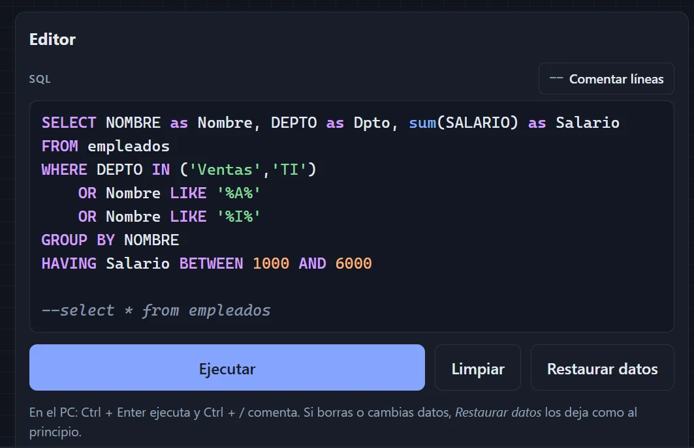

Una plataforma para practicar lo que usa un analista o ingeniero de datos, de lo básico a lo avanzado, desde el celular o el PC y sin conexión. El reto técnico fue ejecutar SQL, Python y Git reales dentro del navegador, sin ningún servidor.
Las plataformas de práctica suelen pedir internet, una cuenta o instalar herramientas, y casi ninguna se usa bien desde el celular. Además, muchas corrigen comparando texto: si escribes una consulta correcta pero distinta a la solución, te la marcan mal.


Una batería de pruebas (npm test) ejecuta cada solución: que cada SQL corra sobre los datos, que cada ejemplo de Python funcione en Python real y que cada reto de Git se resuelva. También verifica que el modo sin internet incluya todos los archivos.
Una ruta de aprendizaje con mini proyectos (Bronze → Silver → Gold con un caso de ventas) y login con Supabase para sincronizar el progreso entre dispositivos.